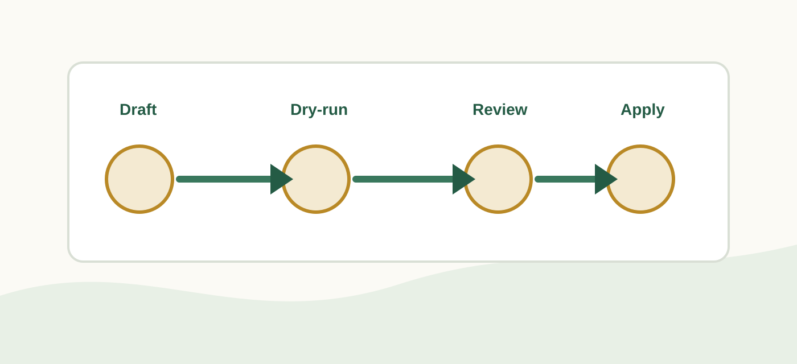

安裝
Windows 使用者優先走 Codex app。可用 Microsoft Store，或依官方文件用 winget 安裝。
Unit 0
這是進入 AI 行政工作臺前的第 0 單元：先讓承辦人有一個可以操作本機檔案、讀流程包、協助檢查結果的 AI 工作環境。
一般承辦人不用一開始就理解 CLI、API、MCP 或 sandbox。第 0 單元只要完成三件事：安裝 Codex、登入帳號、確認能打開專案或本機資料夾。後面的中文安全、文件轉文字、行事曆與工作台任務，才有地方可以執行。

如果你還沒有 Codex，可以把這段貼給 ChatGPT、資訊同仁，或任何協助你安裝的人。安裝方式仍以 OpenAI 官方文件為準。
複製這段安裝請求
請協助我在 Windows 電腦上安裝並開始使用 OpenAI Codex。
目標：
- 安裝 Codex app，讓我可以用 AI 協助處理本機專案與行政資料。
- 完成登入。
- 確認我可以開啟本機資料夾或專案。
- 確認之後可以繼續進行「中文 Windows 編碼安全」與「文件轉 Markdown」單元。
請優先參考 OpenAI 官方文件：
https://developers.openai.com/codex/app/windows
https://developers.openai.com/codex/quickstart
https://developers.openai.com/codex/auth
如果可以使用 Microsoft Store，請引導我從 Microsoft Store 安裝 Codex。
如果需要用命令列，請依官方文件使用：
winget install Codex -s msstore
如果你有本機操作或安裝權限，請代我檢查並完成必要安裝；如果你沒有權限，請用我看得懂的步驟帶我完成，不要只丟技術文件連結給我。
安裝完成後，請幫我確認：
1. Codex 是否可以開啟。
2. 是否已登入 ChatGPT 帳號或 API key。
3. 是否可以開啟一個本機資料夾。
4. 是否需要另外安裝 Git、Node.js 或 Python。
5. 接下來我應該進入哪一個教學單元。不要在這一步把所有工具都裝完。先確認 Codex 能開、能登入、能讀本機資料夾，再往下走。
Windows 使用者優先走 Codex app。可用 Microsoft Store，或依官方文件用 winget 安裝。
使用 ChatGPT 帳號登入是最直覺的路徑；API key 也可用，但資料政策與功能可用性會不同。
能打開本機專案或教學資料夾，後面才能讓 AI 讀流程包、改網站或整理文件。
先使用預設權限與人工確認。會改動資料或寫入系統的流程，之後再學 dry-run 與備份。